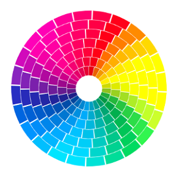
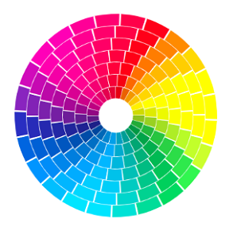
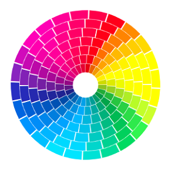

 English | Русский
Round Interfaces Library is a collection of graphic objects classes for building round user interfaces.

Round interfaces can be used to:
This library is being developed to simplify the process of designing and implementing round interfaces.
For example, round progress bar can be created with a few lines of code:
HTML:<canvas id="progress-bar" width="200" height="200"> <div>Use a canvas-compatible browser</div> </canvas>JS:let canvas = document.getElementById('progress-bar'); let context = canvas.getContext('2d'); context.width = canvas.width; context.height = canvas.height; let cx = context.width/2; let cy = context.height/2;let bar = new SegmentProgressBar('bar', context, cx, cy, 50, 25);
bar.draw();
The library is written in JavaScript.
To render graphic elements, the HTML Canvas is used.
The documentation in English and Russian is supplied as part of the library in HTML and Markdown formats.
To use the library, you need basic knowledge of HTML and JavaScript.
js - main folder with library files. To use the library in your own project, just connect these files.
docs - main user documentation folder. The documentation is provided in HTML format.
docs-md - documentation in MD format for revision and use in your own projects.examples - a folder with examples of using basic graphic objects.
gui-examples-js - a folder with examples of implementation of user interfaces composed of basic graphic objects.Examples describe how to build the shape and animation of round interfaces.
css - folder with styles for examples.
svg - folder with vector images for examples.
sounds - folder with sound samples for testing the round equalizer
Progress Bar
1.1. SegmentProgressBar
1.2. SegmentArrayProgressBar
1.3. SegmentDotsArrayProgressBar
Gauge
2.1. SegmentArrow
2.2. SegmentGauge
Timer
3.1. SegmentTimer
3.2. SegmentArrayTimer
3.3. SegmentDotsArrayTimer
3.4. SegmentGaugeTimer
Volume Control
4.1. SegmentKnob
4.2. SegmentSpiralVolumeControl
4.3. SegmentArrayVolumeControl
This library can be used and modified for commercial, educational and personal purposes.
Error messages and recommendations for improvement can be sent to the author's email.
Version: 2.0
Author: Igor Tiunov
E-mail: igor@tiunovs.com